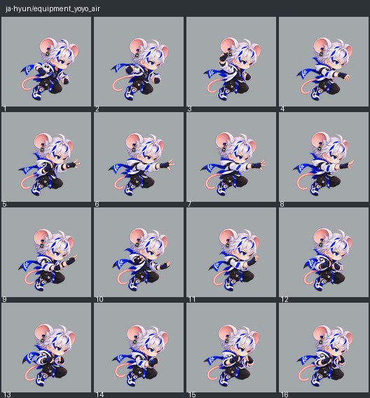
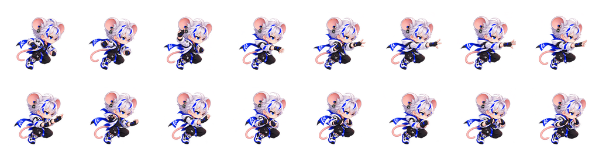
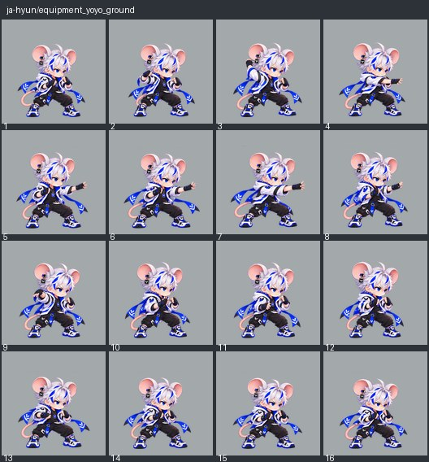
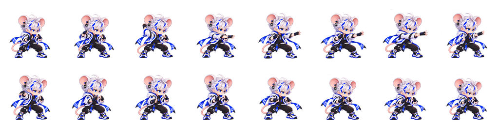
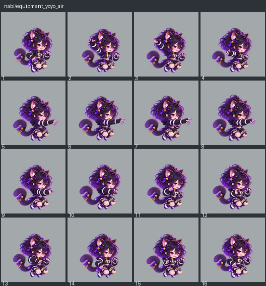
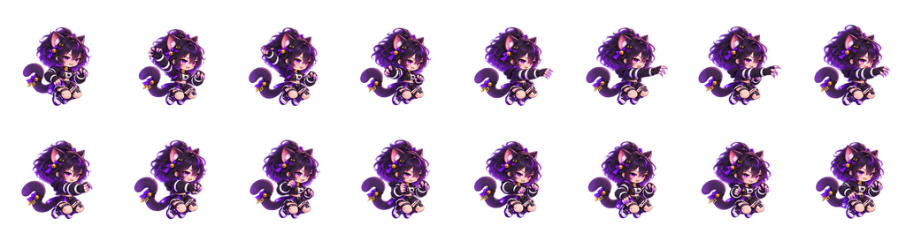
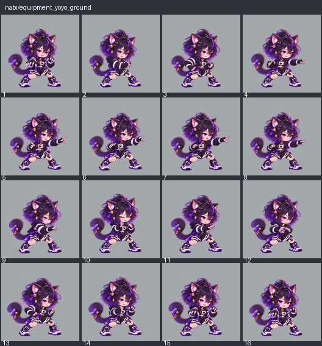
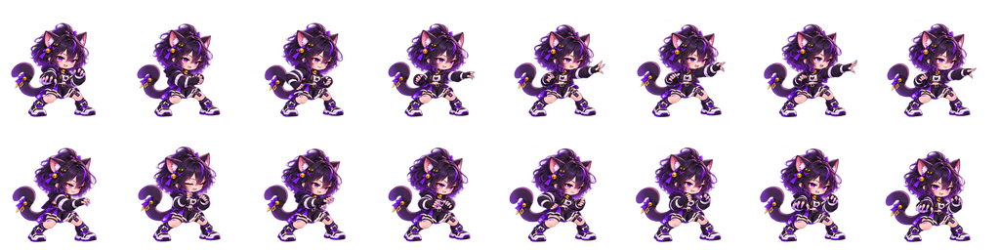

ja-hyun/equipment_yoyo_air
공중에 무릎을 접은 채 팔을 준비하고 전방으로 요요를 던져18틱 동안 늘린 뒤18틱 동안 회수하고 전투 자세로 복귀한다. 실·요요는 별도 표시하고 손 연결·좌우 반전·몸 크기를 유지한다.
전체 16프레임


현재 표현 코드를 실행한 60Hz 검토 기록입니다. 비반복 상태는2초 강제 유지, 반복 모션은완전한2주기, 점프는 단계별 속도를 지정한 시험이며 실제 경기의 상태 수명과 구분합니다. 차지는 유지·해제 변형을 따로 선택하세요. 페이지 표시 자체가 QA 통과는 아닙니다.
공중에 무릎을 접은 채 팔을 준비하고 전방으로 요요를 던져18틱 동안 늘린 뒤18틱 동안 회수하고 전투 자세로 복귀한다. 실·요요는 별도 표시하고 손 연결·좌우 반전·몸 크기를 유지한다.


지상 발 디딤을 유지하며 팔을 준비하고 전방으로 요요를 던져18틱 동안 늘린 뒤18틱 동안 회수하고 전투 자세로 복귀한다. 실·요요는 별도 표시하고 손 연결·좌우 반전·몸 크기를 유지한다.


공중에 무릎을 접은 채 팔을 준비하고 전방으로 요요를 던져18틱 동안 늘린 뒤18틱 동안 회수하고 전투 자세로 복귀한다. 실·요요는 별도 표시하고 손 연결·좌우 반전·몸 크기를 유지한다.


지상 발 디딤을 유지하며 팔을 준비하고 전방으로 요요를 던져18틱 동안 늘린 뒤18틱 동안 회수하고 전투 자세로 복귀한다. 실·요요는 별도 표시하고 손 연결·좌우 반전·몸 크기를 유지한다.

